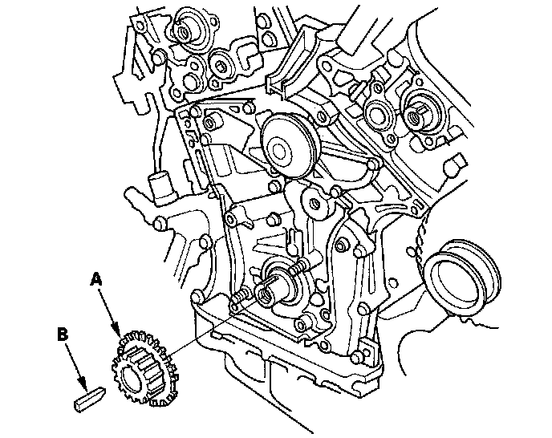

Crankshaft Gear/Sprocket: Service and Repair
Timing Belt Drive Pulley Replacement1. Remove the timing belt.
2. Remove the crankshaft position (CKP) sensor.
3. Remove the timing belt drive pulley (A) and key (B).

4. Inspect the timing belt drive pulley and key for damage. If it is cracked or damaged, replace the timing belt drive pulley.
5. Install the new timing belt drive pulley.
6. Install the CKP sensor.
7. Install the timing belt.
8. Do the CKP pattern clear/CKP pattern learn procedure.